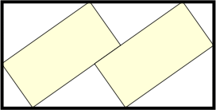
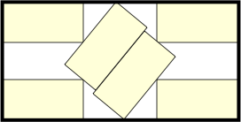
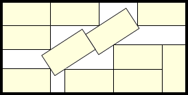
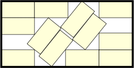

The following pictures show n dominoes (with short side 1) packed inside the smallest known domino (with short side length s).
   
1.
s = 1
Trivial.
2.
s = (2+√2)/√3 = 1.971+
Found by Erich Friedman in April 2026.
3.-4.
s = 2
Trivial.
5.
s = 5/2 = 2.5
Trivial.
6.
s = 2.916+
Found by Erich Friedman in April 2026.
7.-9.
s = 3
Trivial.
10.
s = 7/2 = 3.5
Trivial.
11.
s = (5+√41)/3 = 3.801+
Found by Maurizio Morandi in April 2026.
12.
s = 5/2+√2 = 3.914+
Found by Maurizio Morandi in April 2026.
14.-16
s = 4
Trivial.
17.-18
s = 9/2 = 4.5
Trivial.